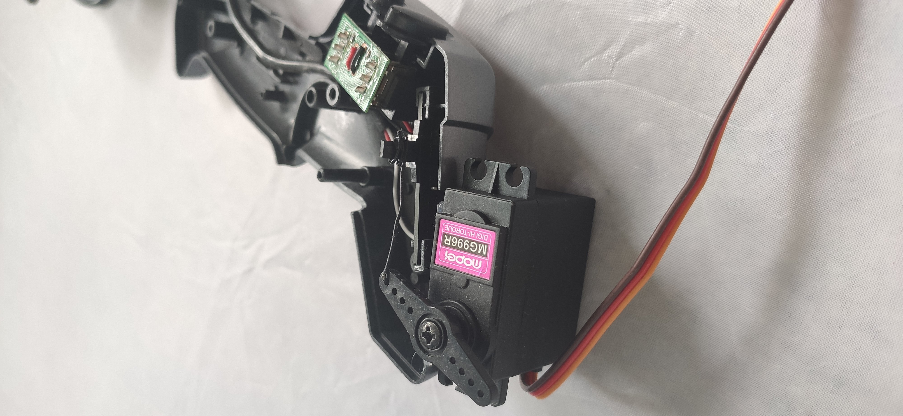
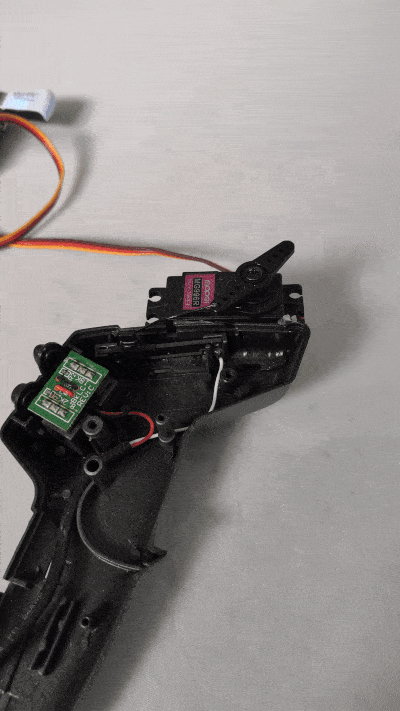

control your Scalextric through the internet
The projcet came to life during the lockdown adveture of 2020. I wanted to race my friends at Scalextric, but they needed to be in the same room as me to do that. So I devised a plan to connect the cars to the internet. Overall I think the project went quite well, but due to the intensity of the racing, the delay over the internet made it unplayable.
The first part of the plan was to be able to control the car from the raspberry pi. my first idea to do this was to hard wire into the controller and pretent to be the controller. but upon opening the controller there was a variable resistor to contend with. I probably could of worked out how to use a digital potentiometer, but I went for the more fun way of connecting a servo the the linear track of the resistor, so I could move it with the Pi.
 
The next step was to be able to control it from a website. I began by making some sliders, so the player can give the throttle a value from 0 to 100
quickly and easily. Then using some php I saved that value to a text file on my server. Now when I moved the slider I could see the text file changing.
Now I needed to get this value onto the Raspberry Pi, the first method I tried was using sockets. This means that the server is constantly sending the value
to the Pi. Then with this value the servo can be moved. This solution worked well, minimal input lag (approx 0.5s) but I was having issues when turning on the
system as I would have to restart the server script for some reason.
This lead onto the next solution which involved using the website to capture the throttle value. With the Pi I made a request to the server for the data.txt file.
This would give me a text file with the throttle value in it. This was much simpler than the sockets as it only required a single script to operate and had no
issues when restarting. The only downside being that this added about 1 second to the input lag, making the car quite difficult to control. This is the current
solution, an will probobly be staying until someone has a better idea.
As always, my projects are open source, so please take them, modify and improve them and share them with your friends to prove you are the better friend
import time import requests from adafruit_servokit import ServoKit kit = ServoKit(channels=16) url = 'https://www.giddystudios.net/data.txt' while True: data = requests.get(url) data = data.text print(data) kit.servo[0].angle = int(data) +20